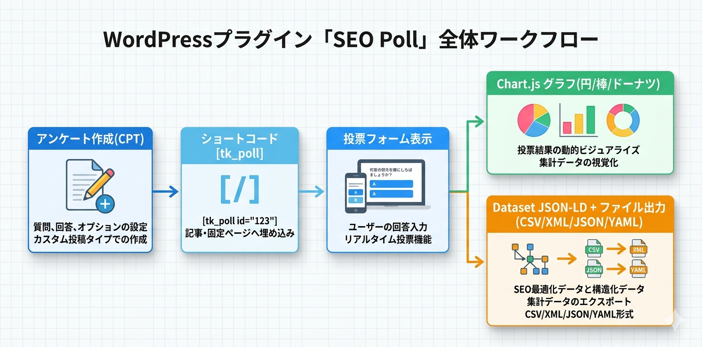

Kashiwazaki SEO Poll マニュアル

WordPressでアンケート（投票）を作成し、Chart.jsによるリアルタイムチャート表示、DatasetスキーマJSON-LD生成、データセットファイル（CSV/XML/JSON/YAML）の自動出力を行うプラグインです。ショートコード [tk_poll id=123] で任意のページにアンケートを埋め込めます。
本プラグインはカスタム投稿タイプ「poll」でアンケートを管理し、フロントエンドにChart.jsによるグラフ表示と投票フォームを出力します。DatasetスキーマJSON-LDとDC.type metaタグを自動生成し、BreadcrumbListスキーマとRank Math連携にも対応しています。フロントエンド出力: CSS 20KB、JS 32KB。
主要機能
アンケート作成
カスタム投稿タイプで単一・複数選択のアンケートを簡単作成
Chart.js表示
円グラフ・棒グラフ・ドーナツチャートで投票結果をリアルタイム表示
構造化データ
DatasetスキーマJSON-LDとデータセットファイル(CSV/XML/JSON/YAML)を自動生成

目次
- 概要 - プラグインの概要と主要機能の紹介
- インストール・初期設定 - インストール手順と初期設定の方法
- アンケート作成・表示 - アンケートの作成方法とChart.js表示
- トラブルシューティング - よくある問題と解決方法
SEO / GEO における強み
本プラグインはDatasetスキーマJSON-LDとDC.type metaタグを出力し、構造化データを通じてSEOおよびGEO（Generative Engine Optimization）に直接貢献します。
DatasetスキーマによるSEO強化
DatasetスキーマJSON-LDにより、アンケートデータが構造化データとして検索エンジンに認識されます。これにより、アンケート結果がGoogle Dataset Searchなどの専門検索で発見可能になります。
BreadcrumbListスキーマ
BreadcrumbListスキーマにより、パンくずナビゲーションが構造化データとして検索結果に表示される可能性があります。これはサイトナビゲーションの理解向上に貢献します。
ユーザーエンゲージメントの向上
Chart.jsによるインタラクティブなグラフ表示は、ユーザーのエンゲージメントと滞在時間の向上に貢献します。投票参加とリアルタイムの結果表示により、ページの価値を高めます。
データセットファイルの活用
CSV/XML/JSON/YAML形式のデータセットファイルが自動生成されます。これらのファイルはデータの再利用性と引用可能性を高め、学術的な参照や外部からのリンク獲得にも寄与します。
GEOへの応用可能性
GEO（Generative Engine Optimization）の観点では、構造化されたデータセット情報はAIが具体的なアンケート結果を参照する際に活用されます。Datasetスキーマとデータセットファイルにより、AIによる引用の精度と可能性が向上します。
動作要件
- WordPress 6.0 以上
- PHP 7.4 以上